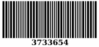

Kitabın Orijinal Adı: Comes The Blind Fury
Yayın Hakları © Altın Kitaplar Yayınevi
Kapak Resmi: Şahin Karakoç
Kapak Düzeni: Fatma Bozkurt
1. Basım / Haziran 1993
Dizgi - Baskı: Altın Kitaplar Basımevi
Celâl Ferdi Gökçay Sk. Nebioğlu İşhanı
Cağaloğlu - İstanbul
Tel: 522 40 45 - 526 80 12 - 511 51 00 - 511 32 26
Faks: 526 80 11
